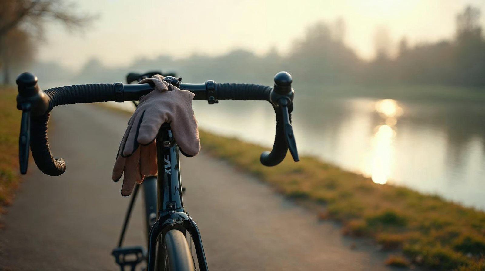
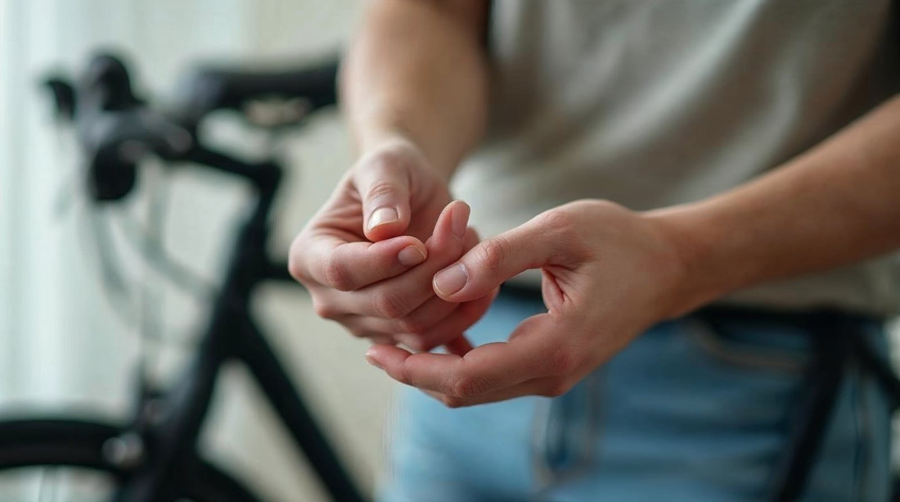
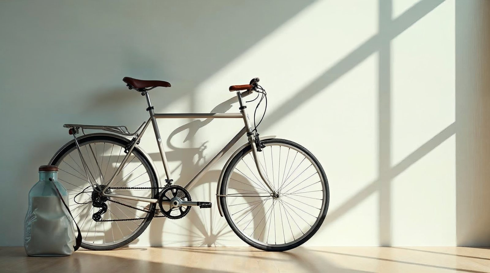
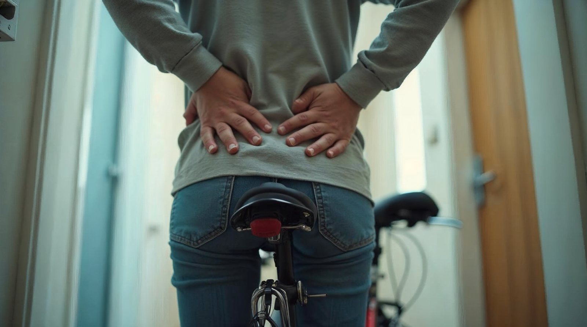

이종호 한의사 감수좋은꿈참사랑한의원 대표원장 (한의사 면허번호 19769)발행 2026-11-23 · 수정 2026-11-26
이 글의 차례
- 왜 이런 불편이 생길 수 있나요
- 먼저 이렇게 여쭙니다
- 일상에서 먼저 해 볼 수 있는 것
- 상황별 예시
- 스스로 점검해 보세요
- 손목·목·엉덩이 불편을 나눠 보면 무엇이 보이나요?
- 왜 거리를 늘린 주에 더 아플까요
- 계절마다 챙길 것이 다릅니다
- 라이딩 기록은 이렇게 활용해 보세요
- 한의원에서는 어떤 치료를 어떻게 정하나요?
- 실내 자전거를 탈 때도 살펴보세요
- 자전거를 몸에 맞추는 것도 한 번에 하나씩
- 라이딩을 마친 뒤 저녁 시간은 이렇게
- 함께 타는 동료와 속도를 맞출 때
- 한의원에서 함께 살필 수 있는 경우
- 얼마나 지켜보고 언제 상담할까요
- 이렇게 기록해 오시면 상담이 쉬워집니다
- 이런 증상은 먼저 확인이 필요합니다
- 관련 글
자전거를 오래 탄 뒤 손목과 목, 엉덩이가 아프다면, 먼저 안장과 핸들 높이, 한 번에 쉬지 않고 타는 시간을 점검하고 한 시간쯤마다 내려 쉬는 것부터 해 봅니다. 한강 자전거길을 따라 주말 라이딩을 다녀오면 손목이 시큰하고 목이 뻐근하며 엉덩이가 얼얼한 경험을 하는 분이 많습니다.
자전거가 몸에 맞지 않거나 쉬지 않고 오래 타면 같은 부위가 계속 눌립니다. 자세와 쉬는 간격을 점검하면 부담을 줄일 수 있는 경우가 많습니다.
바람을 맞으며 달린 기분은 오래 간직하고 싶은데, 저녁에 숟가락을 들다 손목이 시큰하면 속상하실 겁니다. 저는 그 즐거움을 접으시라고 말씀드리기보다, 어디까지 타도 괜찮을지를 함께 찾고 싶습니다.
왜 이런 불편이 생길 수 있나요
- 상체를 앞으로 숙이면 체중의 일부가 손목과 손바닥으로 실려 손바닥 쪽 신경이 눌릴 수 있습니다.
- 손목을 위로 꺾은 채 핸들을 누르면 엄지·검지 쪽이나 새끼손가락 쪽으로 지나는 신경 길에 압력이 오래 걸릴 수 있습니다.
- 앞을 보려고 고개를 오래 들고 있으면 목 뒤 근육이 계속 긴장합니다. 핸들이 멀면 팔을 쭉 뻗고 고개를 더 젖히게 되어 목과 어깨가 함께 굳기 쉽습니다.
- 안장이 너무 높으면 페달을 따라 골반이 좌우로 흔들리고, 너무 낮으면 무릎이 깊게 굽어 무릎 앞쪽과 허리에 부담이 생길 수 있습니다.
- 안장 앞쪽이 들려 있거나 폭이 몸에 맞지 않으면 앉는 뼈 대신 사타구니 쪽에 체중이 실릴 수 있습니다.
- 처음부터 긴 거리를 타면 몸이 적응할 시간이 부족합니다.
먼저 이렇게 여쭙니다
- 한 번에 얼마나 오래 타시나요?
- 안장과 핸들 높이를 몸에 맞게 조절해 두셨나요?
- 손목과 목, 엉덩이 중 어디가 가장 먼저 불편한가요?
- 손이 저리다면 어느 손가락 쪽인가요?
- 주로 어떤 자전거를 타시나요?
- 타고 난 뒤 이틀 정도 지나면 가라앉나요?

일상에서 먼저 해 볼 수 있는 것
타기 전 점검
- 페달이 가장 아래에 왔을 때 무릎이 살짝 굽는 정도로 안장 높이를 맞추고, 안장은 수평에 가깝게 둡니다.
- 핸들은 팔꿈치가 살짝 굽은 채 손이 편하게 닿는 거리와 높이로 맞춥니다. 처음 타거나 몸이 뻣뻣한 분은 핸들을 조금 높여 상체를 덜 숙이게 합니다.
- 패드가 있는 장갑이나 바지로 눌리는 부위의 부담을 줄입니다.
타는 동안
- 한 시간쯤마다 잠깐 내려 몸을 펴고 목과 손목을 풉니다.
- 핸들을 꽉 쥐기보다 힘을 빼고 팔꿈치를 살짝 굽혀 충격을 줄입니다. 손목은 손등과 팔이 일자에 가깝게 두고, 10~15분마다 잡는 위치를 바꿉니다.
- 완전히 멈춘 신호 대기 때 한 손씩 털고, 엉덩이를 안장에서 잠깐 들어 눌린 곳을 쉬게 합니다.
- 고개만 젖히기보다 턱을 살짝 당기고 눈을 들어 앞을 봅니다.
타고 난 뒤
- 따뜻한 샤워로 다리와 허리 긴장을 풉니다.
- 턱을 뒤로 살짝 당겨 5초 버티기를 5번 하고, 손바닥을 가슴 앞에서 마주 대고 손목을 천천히 내려 10초 머뭅니다.
- 엉덩이가 얼얼한 날은 다음 날 하루 쉬거나 짧게 타며 눌린 부위가 회복할 시간을 줍니다.
상황별 예시
- 예를 들어 주말마다 한강 자전거길을 서너 시간씩 타는 직장인이 돌아온 날 밤 엄지·검지 쪽이 저리다면, 한 시간마다 쉬고 손 위치를 자주 바꾸는 것을 2주쯤 이어 가며 지켜봅니다.
- 예를 들어 자전거로 출퇴근을 시작한 분이 일주일 만에 엉덩이가 얼얼해 앉기 불편하다면, 매일 타기보다 하루씩 쉬어 가며 몸을 적응시키고 안장 높이와 기울기를 먼저 점검합니다.
- 예를 들어 집에서 실내 자전거로 운동하는 어르신이 목과 어깨가 뻐근하다면, 상체를 많이 숙이지 않게 핸들을 조금 높이고 한 번에 타는 시간을 20~30분으로 나눠 봅니다.

스스로 점검해 보세요
- 1시간 넘게 쉬지 않고 타는 날이 많다.
- 타는 동안 핸들을 꽉 쥐고 있는 자신을 자주 알아챈다.
- 타고 난 뒤 손가락이 저리거나 밤에 손이 저려 깬다.
- 고개를 들면 뒷목이 당기고, 타고 난 뒤 고개 돌리기가 불편하다.
- 엉덩이가 얼얼해 다음 날 의자에 앉기 불편하다.
- 자전거를 산 뒤로 안장 높이를 한 번도 맞춰 본 적이 없다.
- 사타구니 쪽 저림이나 무딘 느낌이 타고 난 뒤에도 남는다.
손목·목·엉덩이 불편을 나눠 보면 무엇이 보이나요?
자전거를 타고 여러 곳이 아플 때는 각각의 느낌을 나눠 보면 살필 곳이 정리됩니다. 처음에는 부위마다 어떤 느낌인지 여쭙습니다.
- 손바닥과 손가락: 엄지·검지 쪽 저림은 손목 손바닥 쪽이, 약지·새끼손가락 쪽 저림은 손바닥 바깥쪽이 눌릴 때 흔합니다. 타는 동안 시작해 내린 뒤 서서히 가라앉는지 봅니다.
- 손목 자체의 시큰함: 손목을 위로 꺾을 때 손등 쪽이 아프고, 다음 날 문고리를 돌릴 때도 불편합니다.
- 뒷목과 어깨: 고개를 들고 있던 시간만큼 뒷목이 뻣뻣하고, 타고 난 뒤 고개를 돌리기 불편합니다. 팔로 저림이 함께 내려온다면 목 쪽도 살핍니다.
- 엉덩이와 사타구니: 앉는 뼈 주변이 얼얼한지, 피부가 쓸려 따가운지, 사타구니 쪽이 무딘지에 따라 살필 곳이 다릅니다.
여러 곳이 아파도 상체를 숙인 자세 하나에서 시작되는 경우가 많습니다. 그래서 부위마다 따로 대처하기보다 자전거와 몸이 맞닿는 세 곳, 핸들과 안장과 페달의 위치를 함께 점검합니다.
왜 거리를 늘린 주에 더 아플까요
몸은 늘어난 거리에 적응할 시간이 필요합니다. 지난주보다 갑자기 두 배를 타면 손목과 엉덩이가 눌리는 시간도 두 배가 되고, 목이 버티는 시간도 그만큼 길어집니다.
거리를 늘리면 속도를 유지하려고 상체를 더 숙이게 되는 경우도 많습니다. 숙일수록 손목에 실리는 체중이 늘고, 앞을 보려고 고개를 더 젖히게 됩니다.
장거리를 탄 날은 땀을 많이 흘리고 끼니가 늦어지기 쉽습니다. 물과 끼니가 부족하면 근육이 쉽게 지쳐, 같은 거리라도 뻐근함이 더 크게 느껴질 수 있습니다.
계절마다 챙길 것이 다릅니다
- 겨울: 손이 곱으면 핸들을 더 세게 쥐게 됩니다. 손가락까지 덮는 장갑을 끼고, 출발 전 손을 충분히 녹입니다.
- 여름: 땀으로 손이 미끄러우면 그립을 꽉 쥐게 됩니다. 땀을 흡수하는 장갑을 끼고 물을 자주 마십니다.
- 봄·가을: 바람이 센 날은 상체를 낮추고 오래 버티게 되니, 쉬는 간격을 평소보다 짧게 잡습니다.
일교차가 큰 날 아침에 출발한다면 겉옷을 챙겨 몸이 식지 않게 합니다. 몸이 차가운 채로 오래 타면 목과 어깨가 쉽게 움츠러듭니다.
라이딩 기록은 이렇게 활용해 보세요
라이딩 앱을 쓰신다면 거리와 시간, 쉬어 간 지점이 이미 남아 있습니다. 여기에 손 저림이 시작된 시각과 목·엉덩이 불편 점수만 메모로 덧붙이면 충분합니다.
- 예: '40km, 2시간 30분, 쉬기 1번, 1시간 40분쯤 엄지 쪽 저림, 다음 날 목 4점'
- 안장이나 핸들 높이를 바꾼 날은 바꾼 내용을 한 줄 적습니다.
몇 주가 쌓이면 저림이 시작되는 시간이 늦어졌는지, 쉬는 횟수를 늘린 날 무엇이 달라졌는지 비교할 수 있습니다.
한의원에서는 어떤 치료를 어떻게 정하나요?
목과 어깨 근육이 굳어 있다면 침이나 약침을, 목과 등, 골반의 정렬이 흐트러져 있다면 추나를, 근육 긴장이 깊고 몸이 차다면 온열 물리치료를 함께 고려합니다. 손목 주변 힘줄 쪽 불편이 오래 이어지면 체외충격파를 상의하기도 합니다.
오래 탄 뒤 피로가 길게 남고 잠이 얕다면 한약을 함께 이야기하기도 합니다. 이때는 지금 드시는 약을 먼저 확인합니다.
실내 자전거를 탈 때도 살펴보세요
실내 자전거는 바람과 노면 진동이 없어 편해 보이지만, 같은 자세로 오래 머물기 쉽습니다. 영상이나 화면을 보느라 고개를 한쪽으로 돌린 채 타면 목이 한쪽으로 굳기 쉬워, 화면은 정면 눈높이에 둡니다.
실내는 땀이 잘 마르지 않아 엉덩이 피부가 쓸리기 쉽습니다. 땀이 잘 마르는 옷을 입고, 20~30분마다 일어서서 페달을 몇 바퀴 돌리며 눌린 곳을 쉬게 해 보세요.
자전거를 몸에 맞추는 것도 한 번에 하나씩
안장 높이, 안장 기울기, 핸들 높이와 거리를 한꺼번에 바꾸면 무엇이 도움이 되었는지 알기 어렵습니다. 한 번에 하나만 바꾸고 두세 번 타 본 뒤 몸의 반응을 적어 보세요.
- 손목이 아프다면 핸들 높이나 거리부터 봅니다.
- 엉덩이와 사타구니가 불편하다면 안장 기울기와 높이부터 봅니다.
- 무릎 앞쪽이 아프다면 안장이 너무 낮지 않은지부터 확인합니다.
자전거 매장에서 몸에 맞게 조정을 받아 보는 것도 방법입니다. 그때 내가 불편한 부위와 순서를 미리 적어 가면 조정할 곳을 정하기 쉽습니다.
라이딩을 마친 뒤 저녁 시간은 이렇게
장거리를 탄 날 저녁에는 바로 소파에 웅크리고 앉기보다 가볍게 몸을 펴 주세요. 늦은 시간 과식은 잠을 얕게 만들 수 있어, 물과 가벼운 끼니로 몸을 채우고 일찍 잠자리에 드는 편이 다음 날을 위해 좋습니다.
함께 타는 동료와 속도를 맞출 때
여럿이 함께 타면 앞사람 속도에 맞추느라 쉬는 시간을 놓치기 쉽습니다. 출발 전에 한 시간마다 쉬어 가자고 미리 정해 두고, 몸이 불편하면 먼저 쉬어도 된다는 것을 이야기해 두세요. 무리하게 따라가며 상체를 낮추고 버틴 날은 손목과 목이 더 지치기 쉽습니다.
쉬는 지점은 출발 전에 지도에서 미리 골라 두면 지나치지 않기 쉽습니다.

한의원에서 함께 살필 수 있는 경우
- 라이딩 뒤 목과 어깨가 굳어 고개를 돌리기 불편한 경우 자세와 근육의 긴장을 함께 살핍니다.
- 손목과 손가락이 시큰하고 저린 경우 핸들 잡는 방식과 쉬는 간격을 함께 살핍니다.
- 안장에 닿는 부위가 계속 아프고 앉기 불편한 경우 생활 자세와 하루의 앉는 시간을 함께 살핍니다.
좋은꿈참사랑한의원에 오시면 모든 분의 맥을 먼저 짚고, 한 번에 타는 시간과 거리, 손목·목·엉덩이 가운데 어디가 언제부터 불편해지는지, 손이 저리다면 어느 손가락인지를 여쭙습니다. 잠과 식사, 타고 난 다음 날의 피로도 함께 듣습니다.
이어서 목을 돌리고 숙이는 범위, 손목을 굽히고 펼 때 저림이 다시 나타나는지, 허리와 골반의 좌우 균형을 확인하고, 손목 쪽이 의심되면 필요하다고 판단될 때 초음파로 힘줄과 신경이 지나는 길을 살핍니다.
치료와 함께 다음 라이딩을 언제 어느 거리부터 다시 늘릴지, 쉬는 간격과 바꿔 볼 자세를 함께 정합니다. 불편이 남아 있는 동안에는 평소 타던 거리와 시간을 70% 정도로 줄였다가, 다음 날 불편이 늘지 않으면 조금씩 되돌리는 방법을 권합니다.

얼마나 지켜보고 언제 상담할까요
- 타고 난 뒤 생긴 뻐근함과 얼얼함이 이틀 안에 가라앉는다면, 쉬는 간격과 자세를 바꾸며 이어 타도 되는 경우가 많습니다.
- 안장과 핸들을 맞추고 쉬는 간격을 지켜도 2~3주 넘게 같은 부위가 아프거나, 타지 않는 날에도 손 저림이 남아 있다면 상담을 받아 보세요.
- 밤에 손이 저려 깨는 일이 일주일 넘게 이어지거나 단추 잠그기처럼 손끝 동작이 서툴러지면 미루지 말고 확인합니다.
이렇게 기록해 오시면 상담이 쉬워집니다
- 한 번에 타는 시간과 거리, 쉬는 간격
- 불편해지는 부위의 순서(손목·목·엉덩이 등)
- 손 저림이 있다면 어느 손가락인지
- 안장과 핸들 높이를 바꾼 적이 있는지
- 자전거에 앉은 모습을 옆에서 찍은 사진이 있다면 함께
다음에 오시면 어느 쪽 손가락이 언제쯤 저려 왔는지, 쉬는 간격을 바꾼 날은 어땠는지부터 여쭙겠습니다. 좋아하시는 길을 오래 달리실 수 있게, 몸이 보내는 신호를 함께 읽어 가면 좋겠습니다.
이런 증상은 먼저 확인이 필요합니다
- 넘어지며 머리를 부딪친 뒤 의식이 흐리거나 토하거나 두통이 심해지는 경우, 손목·어깨가 붓고 움직이기 어려운 경우
- 사타구니 감각이 쉬어도 돌아오지 않거나 대소변 보기가 평소와 다른 경우
이런 신호가 있으면 한의원보다 가까운 병원이나 응급실을 먼저 찾으세요.
관련 글
- 배달 일로 오토바이나 자전거를 타면 손목과 어깨가 저린 것은 어떻게 살피나요?
- 밤에 손이 저려 깰 때 손목 초음파로 무엇을 확인하나요?
- 목에서 팔로 저림이 내려올 때(목디스크 의심)는 어떤 점을 먼저 확인하나요?

여쭙는 것
- 한 번에 얼마나 오래 타시나요?
- 안장과 핸들 높이를 몸에 맞게 조절해 두셨나요?
- 손목과 목, 엉덩이 중 어디가 가장 먼저 불편한가요?
생활에서 해 볼 것
- 페달이 가장 아래에 왔을 때 무릎이 살짝 굽는 정도로 안장 높이를 맞추고, 안장은…
- 핸들은 팔꿈치가 살짝 굽은 채 손이 편하게 닿는 거리와 높이로 맞춥니다. 처음 타거…
- 패드가 있는 장갑이나 바지로 눌리는 부위의 부담을 줄입니다.
한의원에서 함께 살필 것
- 라이딩 뒤 목과 어깨가 굳어 고개를 돌리기 불편한 경우 자세와 근육의 긴장을 함께…
- 손목과 손가락이 시큰하고 저린 경우 핸들 잡는 방식과 쉬는 간격을 함께 살핍니다.
- 안장에 닿는 부위가 계속 아프고 앉기 불편한 경우 생활 자세와 하루의 앉는 시간을…
먼저 확인이 필요한 신호
- 넘어지며 머리를 부딪친 뒤 의식이 흐리거나 토하거나 두통이 심해지는 경우, 손목·어…
- 사타구니 감각이 쉬어도 돌아오지 않거나 대소변 보기가 평소와 다른 경우
한눈에 보는 표
| 구분 | 핵심 |
|---|---|
| 여쭙는 것 | 한 번에 얼마나 오래 타시나요? 안장과 핸들 높이를 몸에 맞게 조절해 두셨나요? |
| 생활에서 해 볼 것 | 페달이 가장 아래에 왔을 때 무릎이 살짝 굽는 정도로 안장 높이를 맞추고, 안장은 수평에 가깝게 둡니다. 핸들은 팔꿈치가 살짝 굽은 채 손이 편하게 닿는 거리와 높이로 맞춥니다. 처음 타거나 몸이 뻣뻣한 분은 핸들을 조금 높여 상체를 덜 숙이게 합니다. |
| 한의원에서 함께 살필 것 | 라이딩 뒤 목과 어깨가 굳어 고개를 돌리기 불편한 경우 자세와 근육의 긴장을 함께 살핍니다. 손목과 손가락이 시큰하고 저린 경우 핸들 잡는 방식과 쉬는 간격을 함께 살핍니다. |
| 먼저 확인이 필요한 신호 | 넘어지며 머리를 부딪친 뒤 의식이 흐리거나 토하거나 두통이 심해지는 경우, 손목·어깨가 붓고 움직이기 어려운 경우 사타구니 감각이 쉬어도 돌아오지 않거나 대소변 보기가 평소와 다른 경우 |
자주 묻는 질문
장거리 라이딩 뒤 손이 저린 것은 흔한가요?
핸들에 하중이 쏠리면 생길 수 있는 경우가 많아 잡는 방식과 쉬는 간격을 먼저 살펴보길 권합니다.
안장이 딱딱한 것이 원인인가요?
안장과 몸의 자세가 맞지 않을 때 불편이 커질 수 있어 높이와 각도를 함께 점검해 보시길 권합니다.
라이딩 다음 날에도 손목이 시큰하면 어떻게 하나요?
하루 이틀은 손목을 무리하게 쓰지 않는 편이 좋습니다. 저림이 계속되거나 힘이 빠진다면 상담해 보세요.
처음 장거리를 타려면 어떻게 늘려야 하나요?
한 번에 거리를 크게 늘리기보다 매주 조금씩 늘리고, 중간에 쉴 지점을 미리 정해 두는 편이 몸이 적응하기 쉽습니다.
좋은꿈참사랑한의원은 재진 때 지난번 이야기부터 이어서 여쭙니다. 진료시간과 예약은 오시는 길에서 확인하세요.
어디서 상담받을 수 있나요?
좋은꿈참사랑한의원은 서울 동작구 만양로2길 2 신성빌딩 3층·5층(서울 동작구 상도동, 7호선 상도역 3번 출구 근처)에 있습니다. 한의사 3명(이종호 대표원장, 조영기 수석진료원장, 정원영 진료원장)이 진료합니다. 진료시간은 평일 09:30~20:00(점심 13:00~14:00), 토·일·공휴일 09:30~15:00이며, 방문 전 전화로 확인을 권합니다. 예약은 네이버 예약, 카카오톡 상담, 전화 02-815-7510로 받습니다.
이 글은 일반적인 건강 정보이며 개인의 진단이나 치료를 대신하지 않습니다. 증상이 있거나 복용 중인 약이 있다면 진료를 통해 확인하세요. 치료 효과는 개인마다 다를 수 있습니다.
작성 기준: 일반적으로 알려져 있는 건강 정보를 참고해 정리했습니다(대표원장 감수). 증상 기록은 1~2주 동안 하루 1회, 비슷한 시간에 적어 오시면 지난 상태와 비교하기 쉽습니다.